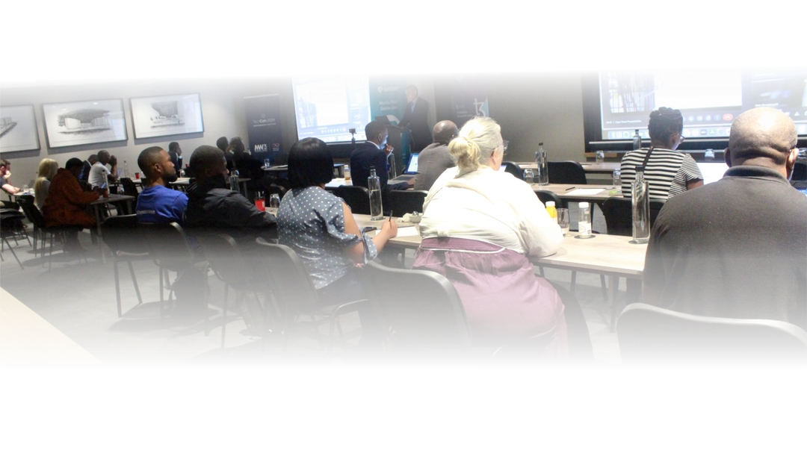

History
TechCon was first held in 1996 in New Orleans, Louisiana. It has since moved about the U.S accomodating the growing number of delegates and utility hosts. It oftene includes a regional facility tour of the sponsoring utility. Most recently it averaged 200 in attendance representing 11 various countries and 30 intereactive exhibiting corporations.
